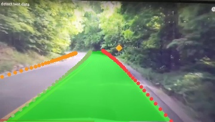

01
Qt 事件入口
LSTR 路线

FT2000/4 · Qt · LIME · LSTR · Unet
用真实项目帧和源码调用链，亲手走完一次车道线视觉感知流程。
端到端数据流

点击按钮，信号槽接管流程
图像增强与 ADMM
示例来自源码中固定读取的 Lime/data/38.jpg 与生成的 output.jpg。
两条部署路线
| 维度 | LSTR | Unet |
|---|---|---|
| 任务表达 | 车道存在性 + 曲线参数 | 每个像素的类别 |
| 输入关键点 | 图像张量 + 全零 mask_tensor | 720×720，HWC→CHW |
| 后处理 | logits 筛选 + log_space 曲线恢复 | 逐像素 argmax + 去 padding |
| 项目优化后时间 | 0.182 s/图 | 4.676 s/图 |
| 工程取舍 | 速度优先，适合端侧主路线 | 像素覆盖细，但计算更重 |
FT2000/4 CPU 侧优化
单个 CPU 核顺序处理，每次循环只完成一个 float 数据。
费曼检验 + 破坏测试
闭卷重建
按“硬件约束 → 系统主线 → LIME 优化 → 两种模型取舍 → 性能数据”顺序，用自己的话复述。不要照抄答案。